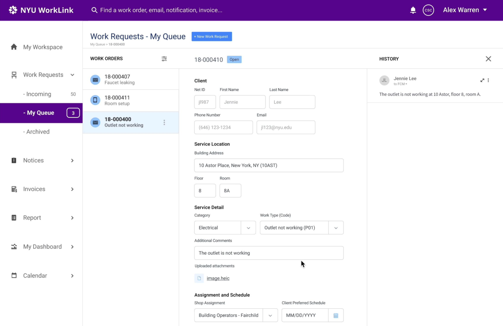
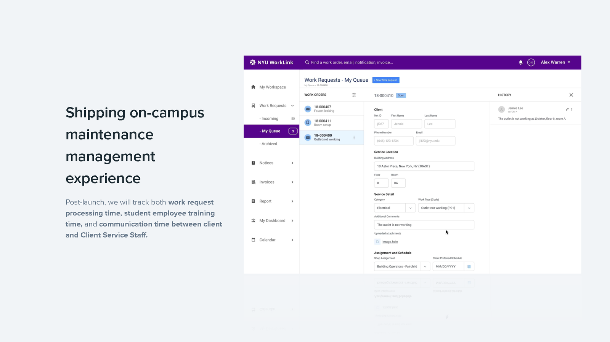

NYU · Internal tools · Case study
Campus maintenance ran on CSVs and re-typing. I designed WorkLink to give every request one record.
One platform replaced the CSV files and the software-hopping for NYU’s Client Service staff. In its first month, average work-request turnaround fell by about a third.
- Role
- Product designerMaintenance Team
- Team
- Cross-functional, 6PM, 2 product owners, 2 engineers
- Used by
- Client Service staffNYU campus maintenance requests
- Timeline
- Sept–Oct 2018Shipped as a unified platform
The problem
Staff kept records by hand, across tools that never talked.
NYU Client Service staff processed maintenance requests by hand — a CSV here, a legacy screen there — and jumped between systems to find any request’s history.
A representative request — Type “Campus Cash,” Problem Code B801, “Campus cash — laundry refund” — had no single accurate record to communicate from. Neither did any other request.
One request · Type: Campus Cash
B801 · Campus cash — laundry refund
B801 · Campus cash — laundry refund
B801 · Campus cash — laundry refund
Typed by hand each time · no tool held the full record
No single record
B801 · Campus cash — laundry refund
Type: Campus Cash
Request B801 — a laundry refund — existed as three hand-typed copies. No tool held its full history.

“As a Client Service Staff at NYU, I want to have an accurate maintenance record so that we can communicate more effectively with departments and clients.” User story from process work
The insight
A request is a workflow, not a row of data.
I mapped how a request travels — submitter, Client Service Center, maintenance department — and found that most requests are multi-step and cross departments.
That changed the brief from “replace the CSV with a form” to “represent a request’s full lifecycle in one place.”
Submitters
Who
Does
“The heater is not working.”
Client Service Center
Who
Does
Maintenance
Who
Does
The solution
Design decisions.
We stated the bet before we built: with one record, staff communicate confidently, process faster, and train new employees more easily.
01Unify the platform
I replaced the CSV files and multiple platforms with one work-order platform, so there was nothing left to switch between.

02Keep the form continuous
I weighed overload against scannability and chose a continuous form over a paginated one: a multi-department request stays visible in one pass.
03Keep the action reachable
I weighed button visibility against minimizing distraction and kept the floating action button — the primary action stays in reach while staff review dense request details.
04Split the review
I ran two pre-launch loops: Client Service and maintenance staff signed off on workflow; engineering walked specs and edge cases per request type.
Outcome
We decided what to measure before we shipped. Then it reported back.
We set the measurement plan in the deck before launch and instrumented all three metrics on day one. The first to report back was average work-request turnaround.
Honest denominator: the ~33% comes from our own first-month post-launch analytics, not the deck. It’s early and directional — but the plan behind it was set before we shipped.

Post-launch
Shipped, still measuring.
Pre-launch review flagged the next scope: search, and grouping multiple work orders. Next I’d measure the overload-versus-scannability tradeoff directly, and track remaining email-heavy overhead.
The open question I still carry is how much of a service problem belongs in the digital tool, and how much in the physical space around it.